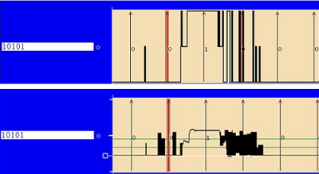
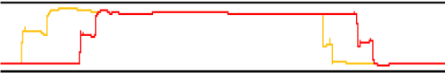
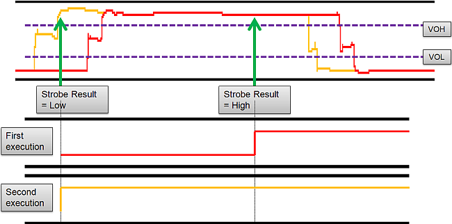
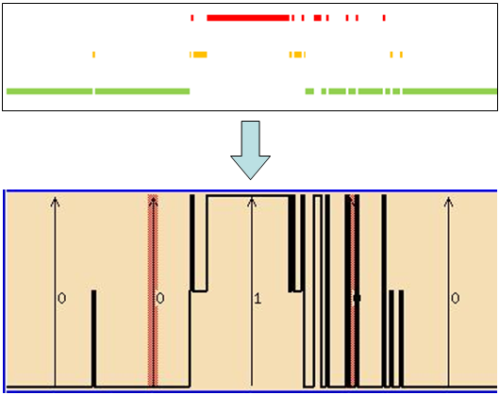
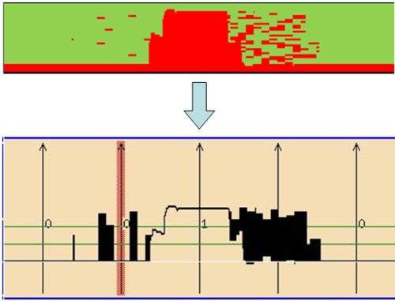

How to read timing diagrams: Unstable signals
This topic explains how to understand the diagram an unstable clock signal in the different resolution modes.
Sometimes, the timing diagram shows results that are hard to understand at a glance. For example, see the following high resolution and scope diagrams.

These diagrams are based on the an unstable clock signal as visualized in the following scope figure.

Displaying with Standard Size
Because in the standard size SmarTest draws the standard diagram from a single execution only. The results, retrieved from functional test execution, can shift from run to run.

Displaying with Double Size
In this example, SmarTest draws the high resolution diagram from multiple executions (800 points across 10 cycles).
Because of the unstable signal, the diagram shows multiple transitions.

Displaying with Scope Size
In this example, SmarTest draws the scope function diagram from 35 VOL levels, with 800 pts across 10 cycles each.
Because of the multiple different transition levels, the diagram gets blurred.

Functional changes
- Introduced before SmarTest 6.3.2